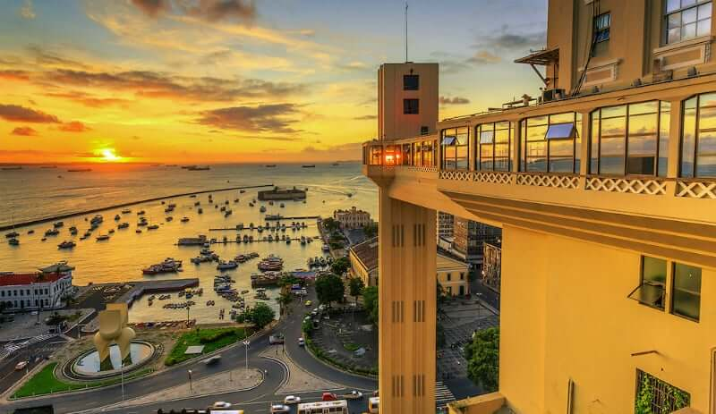

São Paulo

São Paulo é a maior cidade do Brasil, conhecida por sua diversidade cultural, gastronomia e vida urbana intensa.
💰 Preço médio: R$ 300 a R$ 800 por dia
📍 Principais pontos: Avenida Paulista, Parque Ibirapuera, MASP
💡 Dicas: Evite horários de pico e utilize transporte público.
Rio de Janeiro

O Rio de Janeiro é famoso por suas praias, o Cristo Redentor e o Pão de Açúcar.
💰 Preço médio: R$ 400 a R$ 1000 por dia
📍 Principais pontos: Cristo Redentor, Copacabana, Pão de Açúcar
💡 Dicas: Prefira visitar fora da alta temporada.
Salvador

Salvador é conhecido por suas praias paradisíacas, cultura rica e história marcante.
💰 Preço médio: R$ 250 a R$ 700 por dia
📍 Principais pontos: Pelourinho, Elevador Lacerda, praias de Salvador
💡 Dicas: Aproveite a culinária local e leve protetor solar.